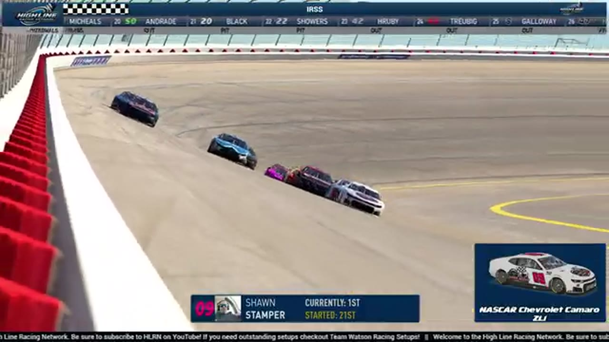

Race 15 at iRacing Superspeedway
Three green-white-checkered attempts, a last restart, and one premature call later, Shawn Stamper finally crossed as the winner.

- Date
- March 2, 2026
- Track
- iRacing Superspeedway
- Race tape
- 2h 32m
- Exact chapters
- 18
Shawn Stamper reaches the record
The primary broadcast's podium readout records Shawn Stamper, Jerry Bergeron, and Larkin Boyer at iRacing Superspeedway.
TAPE-SUPPORTED. Only explicitly supported positions are published; a nearby running order is never promoted into a finish.18 ways back into the race
Every link opens the complete broadcast at the reviewed timestamp. Chapter summaries are navigation claims unless explicitly marked as result-supported.
-
RESTART · OPENINGOPEN EXACT CUT
Larkin Boyer leads the championship-week IRSS opening green
S1 / R15 at 37:13: The official iRacing Superspeedway race broadcast reaches the opening green, with Larkin Boyer among the first drivers named. This cut begins before the launch and stays with the first live-race call.
-
BATTLE · OPENINGOPEN EXACT CUT
The iRacing Superspeedway lead pack goes four wide
S1 / R15 at 46:09: The iRacing Superspeedway pack compresses four wide while Donald Stewart, Jerry Bergeron, and Larkin Boyer are named on the call. The chapter keeps the live battle intact and makes no finishing-order claim.
-
STAGE · OPENINGOPEN EXACT CUT
Stage 2 scoring discussion at iRacing Superspeedway
S1 / R15 at 48:25: The broadcast enters a stage-scoring discussion at iRacing Superspeedway with Jason Russo and Jeremy James in the scoring call. The clip preserves the on-air timing or points call without promoting it into a complete stage result; the accepted feature result ledger remains separate.
-
INCIDENT · MIDDLEOPEN EXACT CUT
Jerry Bergeron and Caleb Smith surface in the iRacing Superspeedway caution replay
S1 / R15 at 1:16:12: The caution sequence centers the replay call on Jerry Bergeron and Caleb Smith. This is a source-bounded incident window; it preserves what the booth reviews without assigning unsupported fault.
-
STAGE · MIDDLEOPEN EXACT CUT
Stage 2 winner call at iRacing Superspeedway
S1 / R15 at 1:27:49: The broadcast enters a stage-scoring discussion at iRacing Superspeedway with Nick Bowman, Trevor Haley, Brandon Showers, and Evan Perry in the scoring call. The clip preserves the on-air timing or points call without promoting it into a complete stage result; the accepted feature result ledger remains separate.
-
INCIDENT · MIDDLEOPEN EXACT CUT
The broadcast queues a damage replay for the next caution
A single-car damage signal arrives while the field remains green, and HLRN explains that it will return to the replay once the scheduled caution appears. The card records the pending review rather than claiming a fresh yellow.
-
FEATURE · MIDDLEOPEN EXACT CUT
Shawn Stamper announces free agency under caution
As the leaders circulate under caution, HLRN reads Shawn Stamper's on-car free-agent message and explains that its existing team listing is no longer current. This is roster context, not a second incident card.
-
STRATEGY · MIDDLEOPEN EXACT CUT
Fuel-only stops split the iRacing Superspeedway field
S1 / R15 at 1:47:30: Fuel-only calls split the pit cycle, with Alex Galloway and Scott Wise named in the sequence. The clip is a strategy receipt from the primary iRacing Superspeedway broadcast, not a reconstructed scoring sheet.
-
BATTLE · CLOSINGOPEN EXACT CUT
Brian Hebert and Sebastian Michaels carry the iRacing Superspeedway lead battle
S1 / R15 at 1:50:54: The iRacing Superspeedway pack compresses in a front-pack fight while Brian Hebert and Sebastian Michaels are named on the call. The chapter keeps the live battle intact and makes no finishing-order claim.
-
INCIDENT · CLOSINGOPEN EXACT CUT
A multi-car crash brings out the iRacing Superspeedway yellow
S1 / R15 at 1:51:54: A multi-car incident centers the replay call on Easton Collins. This is a source-bounded incident window; it preserves what the booth reviews without assigning unsupported fault.
-
RESTART · CLOSINGOPEN EXACT CUT
Brian Hebert and Alex Leeball bring iRacing Superspeedway back to green
S1 / R15 at 1:56:40: Brian Hebert and Alex Leeball are in the booth's front-pack call as iRacing Superspeedway returns to green. The cut keeps the restart launch and the first lap of lane development together.
-
INTERVIEW · CLOSINGOPEN EXACT CUT
Ryan Wilson gives an in-race account from the IRSS booth
S1 / R15 at 2:00:05: Ryan Wilson joins the HLRN booth for a first-person race account. The interview is preserved as context and does not create a placement claim outside the accepted result ledger.
-
INCIDENT · CLOSINGOPEN EXACT CUT
Jerry Bergeron is caught in the iRacing Superspeedway caution replay
S1 / R15 at 2:04:15: The caution sequence centers the replay call on Jerry Bergeron. This is a source-bounded incident window; it preserves what the booth reviews without assigning unsupported fault.
-
INCIDENT · CLOSINGOPEN EXACT CUT
Caleb Smith threads through the late superspeedway wreck replay
The booth switches to Caleb Smith's view as he slows through a wreck involving Aldo Nolle, Eric Hayden, Scott Wise, Brian Hayes, and other cars. The replay documents Smith's route through the traffic without assigning blame.
-
BATTLE · CLOSINGOPEN EXACT CUT
The iRacing Superspeedway lead pack goes three wide
S1 / R15 at 2:16:46: The iRacing Superspeedway pack compresses three wide while Brian Hebert, Larkin Boyer, and Shawn Stamper are named on the call. The chapter keeps the live battle intact and makes no finishing-order claim.
-
FINISH · CLOSINGOPEN EXACT CUT
Shawn Stamper survives the extra lap at iRacing Superspeedway
The booth first thinks the race is over, catches the extra lap, and stays with Shawn Stamper as he holds the lead through the final wreck and receives the corrected live winner call.
-
RESULT · CLOSINGOPEN EXACT CUT
Shawn Stamper is confirmed atop the iRacing Superspeedway results
The primary broadcast's podium readout records Shawn Stamper, Jerry Bergeron, and Larkin Boyer at iRacing Superspeedway.
-
POSTRACE · CLOSINGOPEN EXACT CUT
Trevor Haley and Thomas Christie anchor the iRacing Superspeedway post-race result review
S1 / R15 at 2:29:49: The reviewed live-race close has passed before this iRacing Superspeedway result booth review begins with Trevor Haley, Thomas Christie, and Shawn Stamper named in the discussion. It remains post-race context, not a new incident, stage, strategy call, finish, or result receipt.
All 20 official winners are backed by position-specific calls in a primary broadcast or an HLRN-authored companion episode. Complete finishing orders, points, and starts remain open until owner records are supplied.